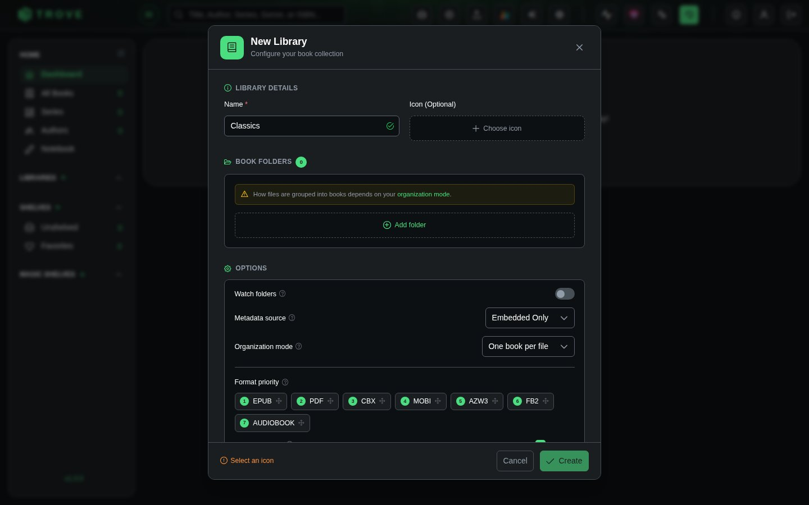
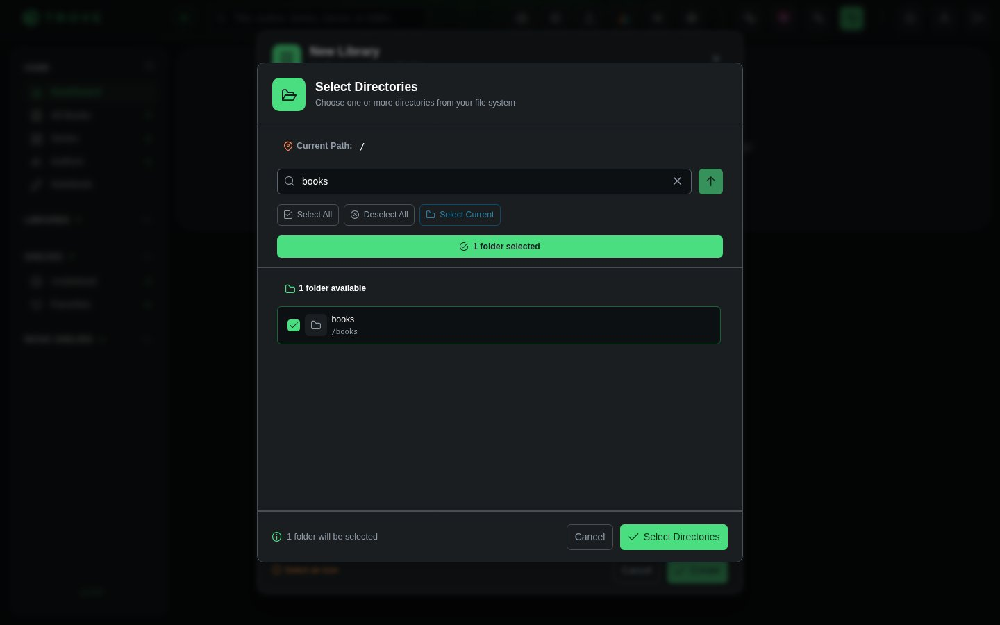
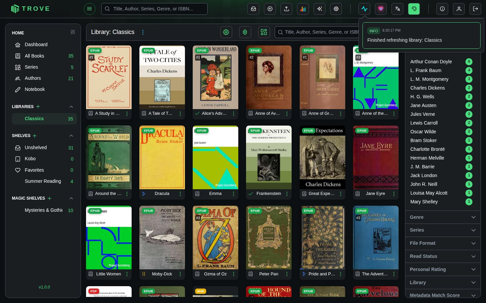

Your first library
A library is a set of folders Trove keeps track of. It reads every book in them, and each library has its own settings for scanning, metadata and formats. Most people start with one; you can add more for comics, audiobooks or anything you'd rather keep apart.
Create the library
Click Create Your Library on the empty dashboard, or the + beside Libraries in the sidebar.


Name and icon
Give the library a name, such as "Novels" or "Comics". The icon is optional: pick a built-in one or one of your own (see Custom icons).
Book folders
Click Add folder and tick the folders that hold your books. A library can have several folders, but each folder belongs to one library. In Docker, you'll see the folders you mounted into the container, such as /books.

A folder on an NFS or SMB share gets a Network share badge. Trove checks such folders for new books every minute instead of waiting to be told, and writes to them with verified copies. See Network storage.
Options
| Option | What it does |
|---|---|
| Watch folders | Notices books being added, changed or removed, and updates the library by itself. Without it, use Re-scan Library after changing files. |
| Metadata source | Where titles, authors and so on are read from when a book is scanned (see below). |
| Organization mode | One book per file, or One book per folder when each book has its own folder holding its formats and extras. This can't be changed later. See Organization modes. |
| Format priority | When a book comes in several formats, which one opens by default. Drag to reorder. |
| Allowed formats | Which kinds of file this library picks up: EPUB, PDF, comics (CBZ, CBR, CB7), MOBI, AZW3, FB2 and audiobooks. All are allowed unless you untick some. |
The metadata source choices are:
| Source | Reads from |
|---|---|
| Embedded Only | The details stored inside each book file (the default) |
| Sidecar Only | .metadata.json files next to the books, which Trove can write (see Sidecar files) |
| Prefer Sidecar | The sidecar file if there is one, otherwise the book file |
| Prefer Embedded | The book file, filling gaps from the sidecar |
| None | Nothing: books are named after their files until you add details |
The first scan
Click Create. Trove starts scanning straight away, reading each book's details and cover, and books appear as they're found. The scan carries on in the background; follow it from the activity button in the top bar.

Next
- Managing libraries: edit, re-scan, fetch metadata, delete
- Folder structure: how to lay out your files
- Grid view: finding your way around the library